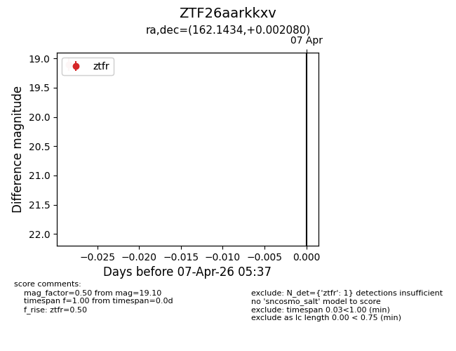
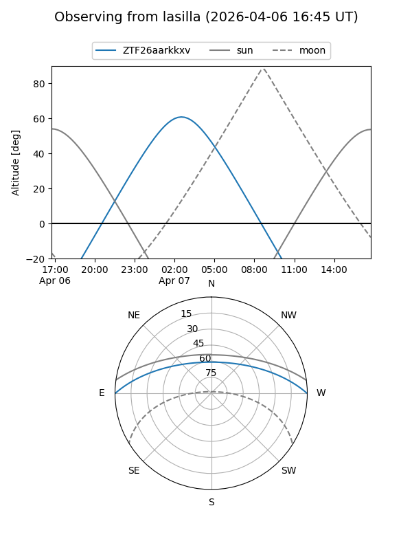
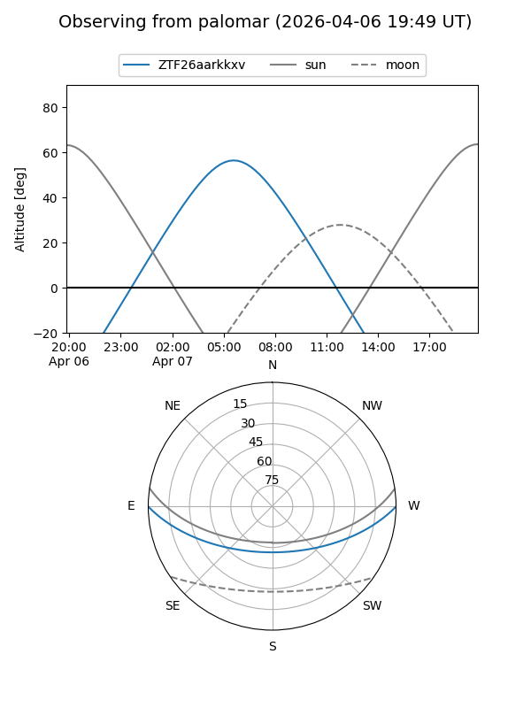

ZTF26aarkkxv
Target ZTF26aarkkxv at 2026-04-07 05:42
Aliases and brokers:
FINK: link
Lasair: link
ALeRCE: link
alt names
ZTF26aarkkxv (ztf,fink_ztf)
Coordinates:
equatorial (ra, dec) = 162.1434,+0.00208
equatorial (HMS+DMS) = 10:48:34.42,+00:00:07.49
galactic (l, b) = (250.4349,+49.92009)
Flags:
Photometry:
last ztfr=19.10
1 ztfr detections
Lightcurve

Visibility


Additional plots